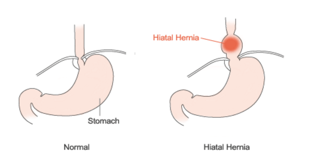

Hiatal Hernia
Hiatal hernia is a condition where the stomach pushes through an opening of the diaphragm, the muscle found in the chest that separates the chest from abdomen.
The specific cause for hiatal hernia is unknown, however, common risk factors include age, weight, and smoking. This condition develops due to the supporting tissue around the area to weaken, allowing the stomach to approach upwards through the opening. This condition also increases the chances of developing acid reflux.
Symptoms may include heartburn, difficulties swallowing, nausea and vomiting, shortness of breath, chest or abdominal pain, and acid reflux.
When diagnosing hiatus hernias, an endoscopy or other imaging tests such as a CT scan or Barium swallow X-ray will be recommended.
Treatment of a hiatal hernia may include dietary modifications such as less fatty and heavy food. Surgical approaches to fix the hernia are very rarely done.